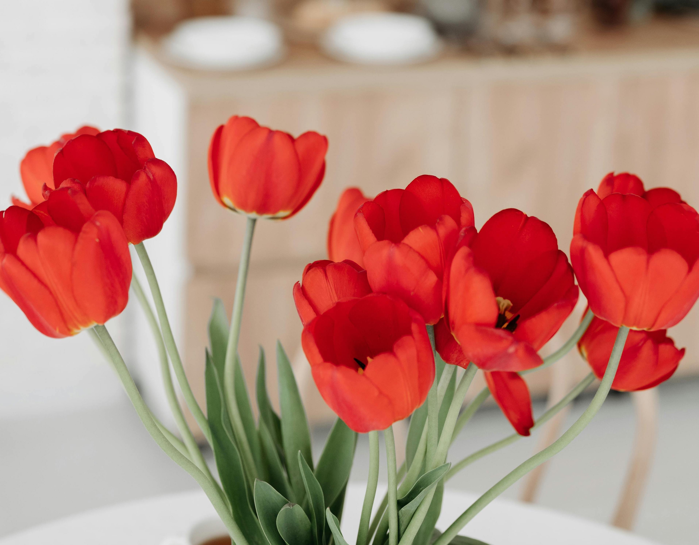

Menu
Classic Tulips
-
Red Emperor Tulips
$12.99
A classic red tulip with rich, vibrant petals. Perfect for traditional bouquets or to add a bold statement to any garden.
-
White Snow Tulips
$12.99
Pure white petals that offer elegance and simplicity. Ideal for weddings or minimalistic arrangements.
-
Yellow Prince Tulips
$13.50
Bright, cheerful yellow tulips that bring a ray of sunshine to any occasion. Perfect for springtime celebrations.
-
Pink Diamond Tulips
$15.99
Soft pink with a touch of lavender, these tulips exude romance and are perfect for gifts and special occasions.
-
Purple Majesty Tulips
$16.99
Deep purple petals with a hint of violet, these tulips make a stunning centerpiece for any event.
-
Orange Flame Tulips
$14.50
A striking orange hue with fiery undertones. Ideal for creating eye-catching displays in your home or garden.
Specialty Tulips

-
Parrot Tulips
$19.99
Exotic and frilled, these multi-colored tulips are known for their bold patterns and unique texture, adding an artistic flair to any bouquet.
-
Double Late Tulips
$17.99
Luxuriously full blooms with layers of soft petals. These tulips bring an antique charm to your floral arrangements.
-
Fringed Tulips
$18.50
Delicate, fringed petals that create a soft and ethereal look, making them a stunning choice for romantic occasions..
-
Triumph Tulips
$14.99
Strong and sturdy with bright, contrasting colors. These tulips are known for their reliability and resilience in any setting.
-
Lily-Flowered Tulips
$16.50
With slender, pointed petals that open wide in the spring, these tulips resemble lilies and add a graceful touch to any bouquet.
-
Viridiflora Tulips
$22
Featuring green-tinged petals, these unique tulips are an exciting addition to any flower arrangement, bringing a modern touch to classic designs.
Bouquets & Arrangements
-
Spring Tulip Bouquet
$39.99
A vibrant mix of tulips in all colors of the rainbow. The perfect gift for any occasion, from birthdays to anniversaries.
-
Classic White Tulip Bouquet
$44.99
Elegant and timeless, this arrangement features only the purest white tulips, making it ideal for formal events or as a sophisticated gift.
-
Pastel Dream Tulips
$42.99
Soft hues of pink, lavender, and peach create a calming and beautiful bouquet. A gentle, serene choice for baby showers or peaceful occasions.
-
Bold and Beautiful Tulip Arrangement
$49.99
Bright colors like red, orange, and yellow arranged into a bold and eye-catching bouquet. Perfect for celebrations and lively events.
-
Romantic Tulip and Rose Combo
$55
Combining the elegance of tulips and the romance of roses, this bouquet is ideal for expressing love and affection..
-
Luxury Tulip Arrangement
$67.99
A premium selection of the finest tulips, arranged in a luxurious display. Perfect for high-end events, weddings, or as an extravagant gift..